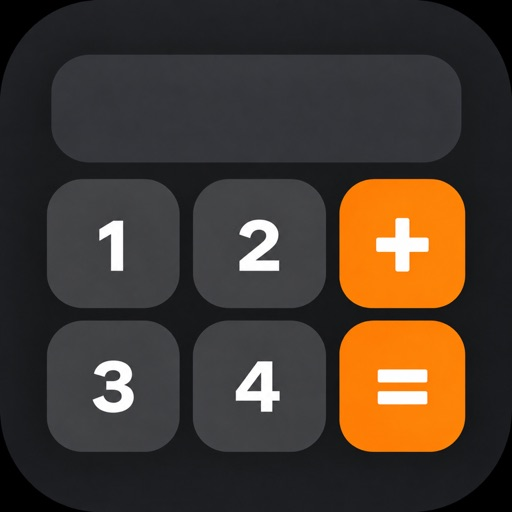
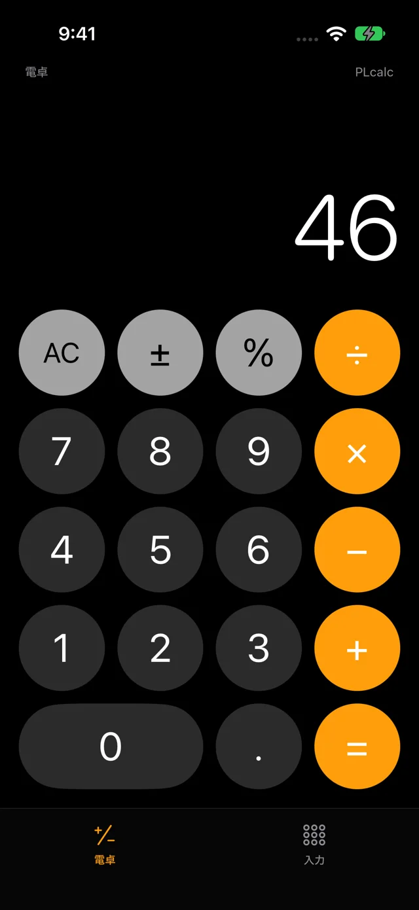
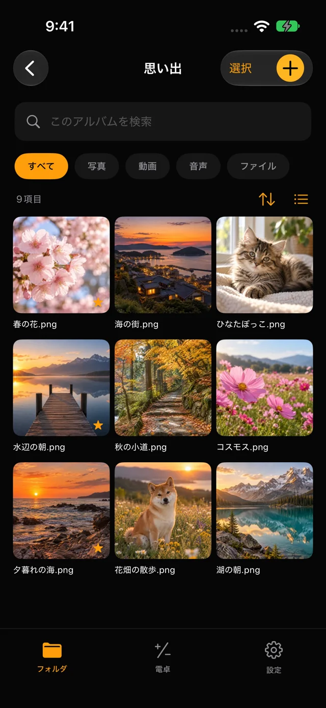
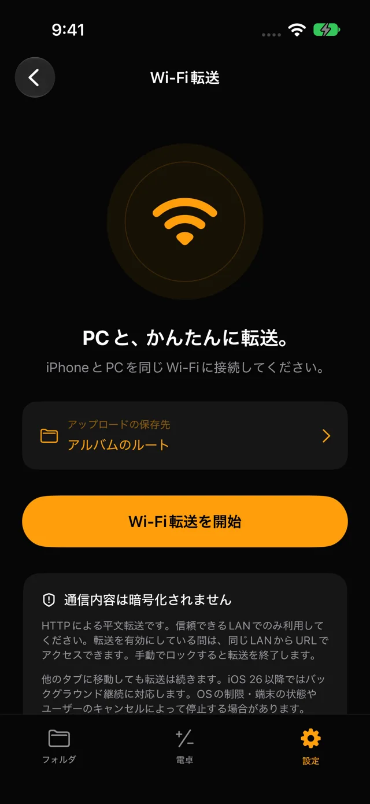

端末内に暗号化して保存
ファイルの内容やフォルダ名を暗号化して保管。4桁のPIN、または8〜64文字のパスワードで開きます。

Photo Lock Calculator 〜秘密の写真庫〜iPhone & iPad · plcalc
iPhone・iPadに写真、動画、ファイルを暗号化して保存。PINまたはパスワードでアルバムを開けます。アカウント登録は不要です。
App Storeで見るiOS 17+ · iPadOS 17+


PHOTO LOCK CALCULATOR
ファイルの内容やフォルダ名を暗号化して保管。4桁のPIN、または8〜64文字のパスワードで開きます。
写真、動画、音声、書類を階層フォルダで整理。検索やお気に入りに対応し、ゴミ箱に入れた項目も復元できます。
同じWi-Fiにつなぎ、アプリに表示されたアドレスをパソコンのブラウザで開くだけ。保存先のフォルダを選んでアップロードできます。

01 / 02 / 03
PINまたはパスワードを決め、確認のためもう一度入力します。
「入力」タブでアルバムを開き、＋から写真やファイルを追加します。
日常の計算には「電卓」タブを使えます。
PIN・パスワードを忘れた場合の復旧機能はありません。大切なファイルは別途バックアップしてください。保存容量は端末の空き容量によって異なります。
Wi-Fi転送は暗号化されないHTTP通信です。信頼できるLANでご利用ください。転送中は同じLANの端末から共有中のアルバムにアクセスできます。バックグラウンド転送はOSの制限で停止する場合があります。
サポート ↗